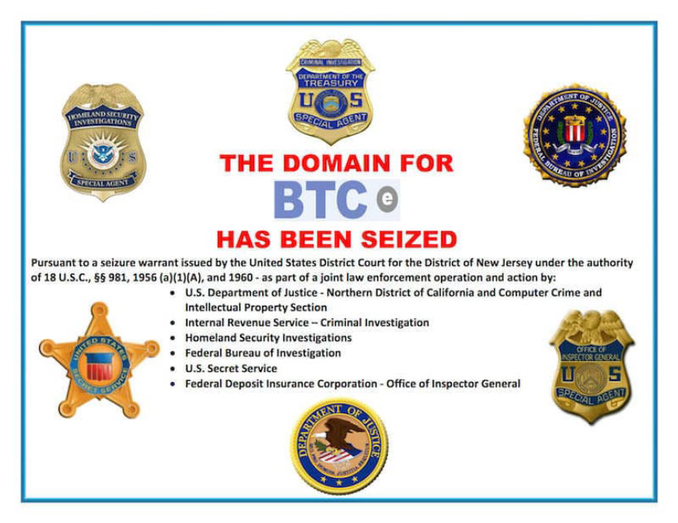
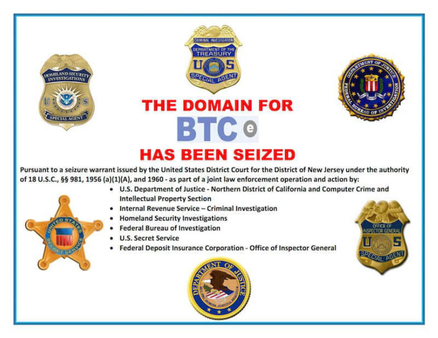

DarkMarket Has Been Seized
International law enforcement agencies worked together to seize DarkMarket servers and arrest the alleged operator of the marketplace, according to an announcement from Europol.
Earlier this week, the Central Criminal Investigation Department in Oldenburg arrested a 34-year-old Australian citizen near the German-Danish border. The Australian citizen, according to Europol, is the alleged administrator of DarkMarket.

The investigation involved law enforcement in Germany, Australia, Denmark, Moldova, Ukraine, the United Kingdom, and the USA. Europol also provided assistance in the form of cross-border collaboration. As part of the international investigation, authorities seized more than 20 servers in Moldova and Ukraine. Law enforcement plans to use the data stored on the seized servers to identify marketplace staff, vendors, and even customers.
The investigation into Cyberbuker, a bulletproof hosting provider, provided law enforcement with the information needed to launch an investigation into DarkMarket. To some, this was obvious: DarkMarket went offline following the Cyberbunker raids.
There is a current lack of information about the takedown. Additional details will likely become public over the next few days.
DarkMarket, until its seizure, was the largest darkweb marketplace with:
almost 500 000 users; more than 2 400 sellers; over 320 000 transactions; more than 4,650 bitcoin and 12,800 monero transferred.
At the current rate, this corresponds to a sum of more than €140 million.
Earlier this week, the Central Criminal Investigation Department in Oldenburg arrested a 34-year-old Australian citizen near the German-Danish border. The Australian citizen, according to Europol, is the alleged administrator of DarkMarket.

Law enforcement is adding more customization to their seizure banners
The investigation involved law enforcement in Germany, Australia, Denmark, Moldova, Ukraine, the United Kingdom, and the USA. Europol also provided assistance in the form of cross-border collaboration. As part of the international investigation, authorities seized more than 20 servers in Moldova and Ukraine. Law enforcement plans to use the data stored on the seized servers to identify marketplace staff, vendors, and even customers.
The investigation into Cyberbuker, a bulletproof hosting provider, provided law enforcement with the information needed to launch an investigation into DarkMarket. To some, this was obvious: DarkMarket went offline following the Cyberbunker raids.
There is a current lack of information about the takedown. Additional details will likely become public over the next few days.
DarkMarket, until its seizure, was the largest darkweb marketplace with:
At the current rate, this corresponds to a sum of more than €140 million.